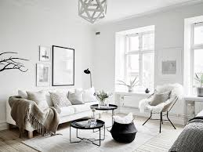

Använd ljus för att förstora rummet
Ljus är ett av de kraftfullaste verktygen för att förbättra inredningen. För små rum är ljus, både naturligt och artificiellt, ett fantastiskt sätt att få rummet att kännas större och mer öppet. Om du inte har stora fönster kan du använda speglar för att reflektera ljus och skapa en illusion av mer utrymme. Placera ljuskällor i hörn och undvik för starka direktljus för att skapa en mjukare, mer inbjudande atmosfär. Taklampor, golvlampor och ljusslingor ger en mysig känsla, medan spotlights på väggarna kan framhäva konst eller andra dekorativa objekt.
